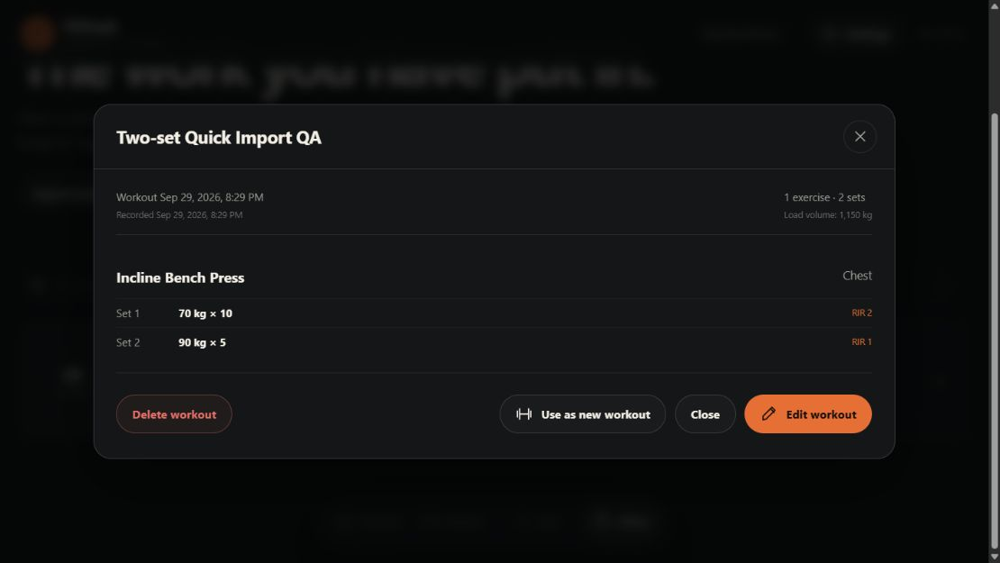
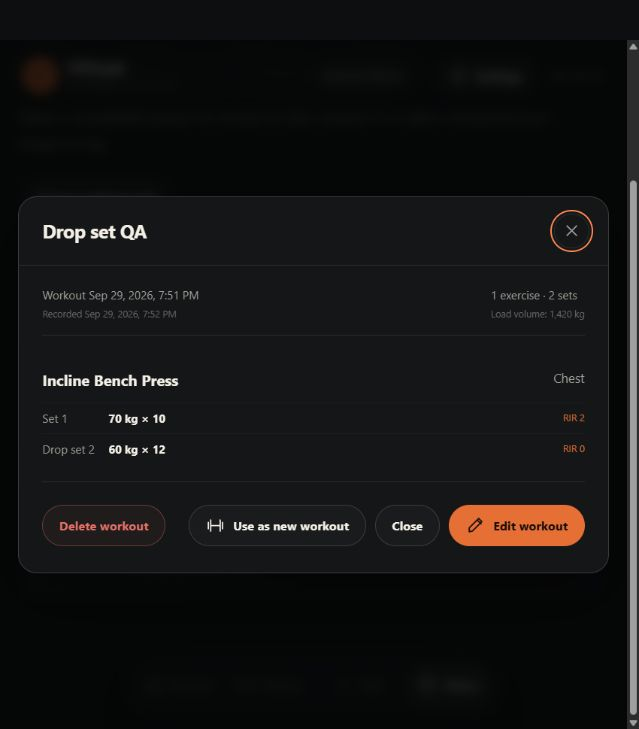
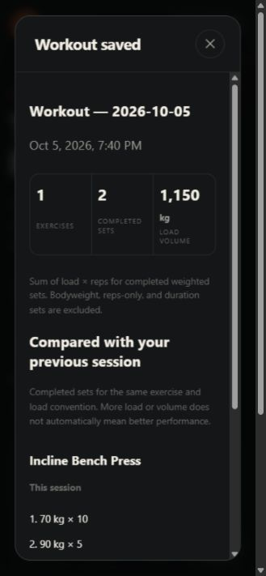
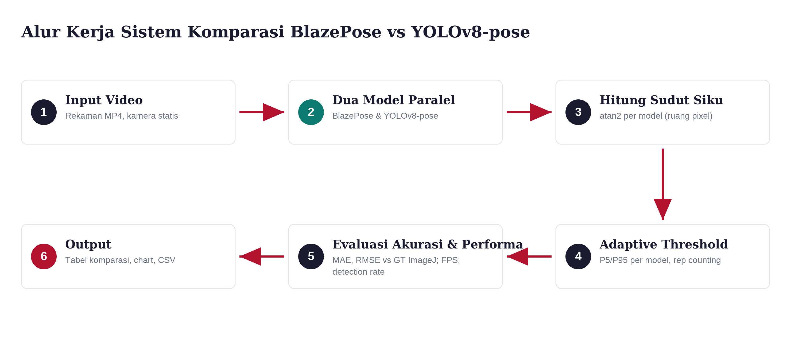
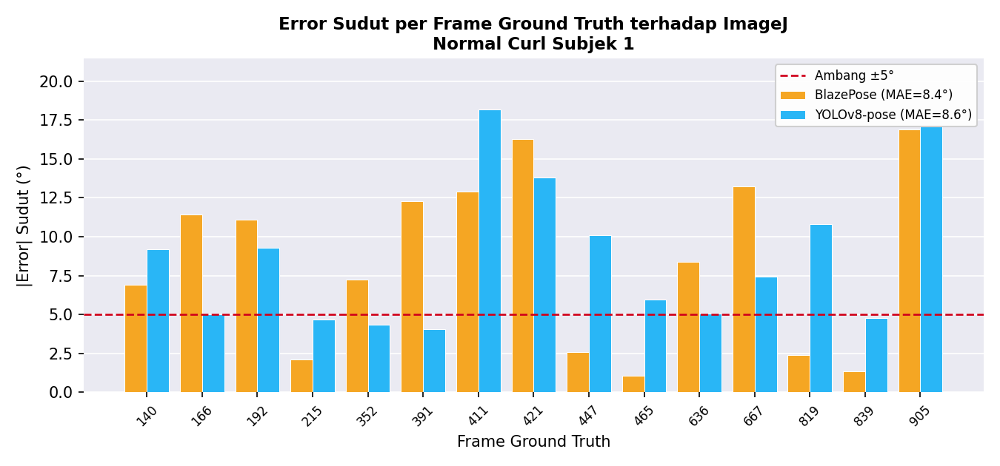

Strukturkan
Mengubah data mentah atau tidak terstruktur menjadi informasi yang siap dianalisis.
Tersedia untuk peluang kerja
Junior Data Analyst · Bekasi, Jawa Barat
Saya Henry Abimanyu Dewandani. Saya mengolah log, mengevaluasi model, dan membangun visualisasi agar informasi yang rumit dapat diperiksa, dibandingkan, dan digunakan untuk mengambil keputusan.
01 / Profil
Pengalaman saya bergerak dari log operasional hingga data gerakan tubuh. Polanya sama: memahami konteks, merapikan informasi, memilih ukuran yang tepat, lalu menyajikan hasil yang dapat ditelusuri kembali.
Mengubah data mentah atau tidak terstruktur menjadi informasi yang siap dianalisis.
Menggunakan metrik yang relevan, termasuk MAE dan RMSE untuk evaluasi model.
Menyusun dashboard, grafik, dan ringkasan agar temuan mudah diperiksa.
02 / Studi kasus
Tiga studi kasus berikut menunjukkan cara saya menangani data produk, evaluasi model, dan monitoring operasional.
Live product
Product analytics
Aplikasi pencatatan latihan yang berkembang menjadi produk analitik untuk membantu pengguna membaca progresnya sendiri—bahkan ketika bekerja secara offline.



Model evaluation
Computer vision analysis
Pipeline Python untuk membandingkan MediaPipe BlazePose dan YOLOv8-Pose terhadap pengukuran manual ImageJ pada video bicep curl.
repetisi terdeteksi oleh BlazePose pada skenario terpilih yang dicatat di CV.


Internal system
Log & observability
Mengolah log ITGC dan Kubernetes menjadi data terstruktur serta dashboard Kibana untuk kebutuhan monitoring operasional dan alur audit.
Batas publikasi
Materi, nama host, data, dan tangkapan layar sistem internal tidak ditampilkan karena tidak ada izin publikasi.
03 / Jejak
Fondasi teknis Informatika yang dipertemukan dengan praktik monitoring dan analisis data.
Jun–Agu 2025
Pengalaman
Log and Observability Engineering Intern, DIT-INF
2022–Sep 2026
Pendidikan
S1 Informatika · IPK 3,21/4,00
Tugas akhir membandingkan MediaPipe BlazePose dan YOLOv8-Pose untuk analisis gerakan bicep curl berbasis video.
Mei 2025
Pelatihan
Mereka Academy
Pelatihan dasar mengenai konsep dan layanan kecerdasan buatan pada ekosistem Microsoft Azure.
04 / Keahlian
Tidak menggunakan persentase kemampuan yang sulit dibuktikan. Daftar ini menunjukkan alat dan metode yang benar-benar muncul dalam pengalaman atau proyek saya.
01
02
03
04
05 / Kontak
Saya terbuka untuk posisi penuh waktu, kesempatan fresh graduate, dan proyek freelance analitik terpilih.
Mulai percakapan